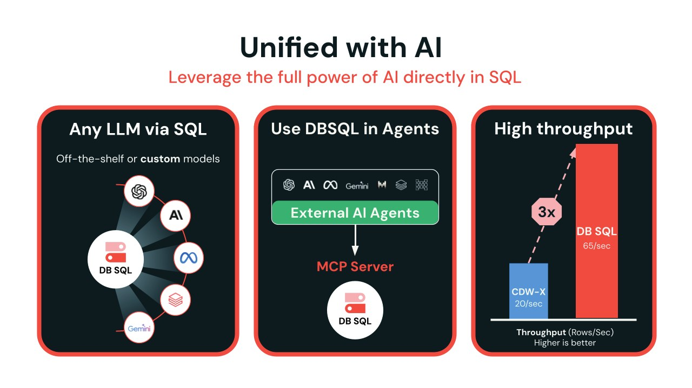
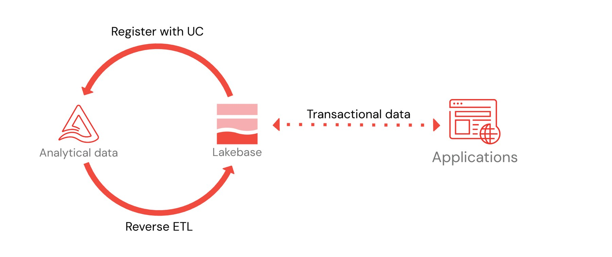
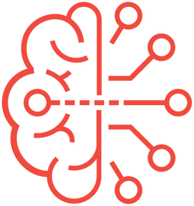
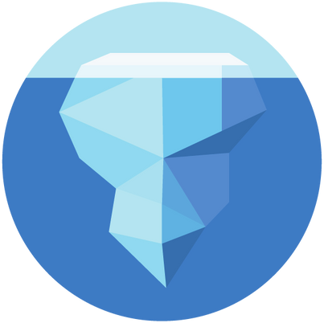
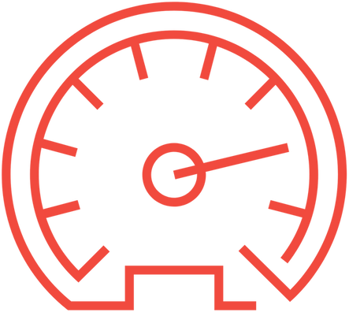
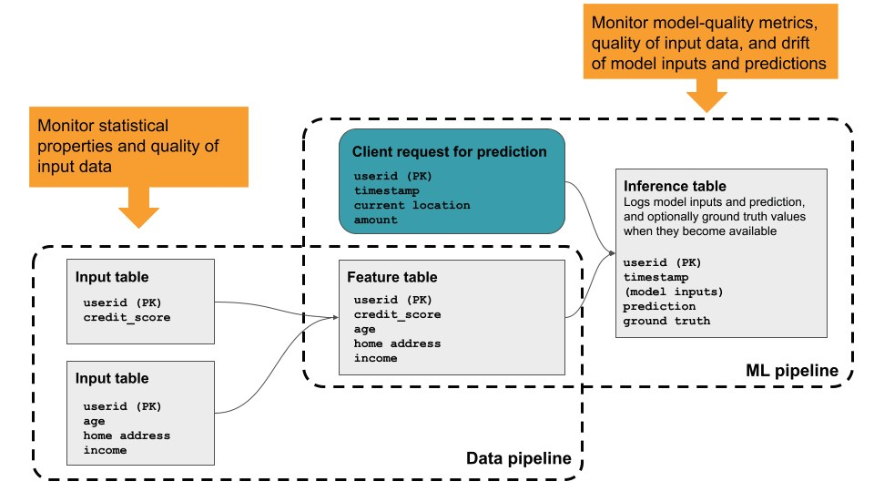

One page for each part of the platform. Each card gives the current product name and the status that the official docs confirm.
One platform to build, deploy, share and operate data, analytics and AI on all clouds.
Move data in, transform it, query it with SQL, build dashboards and deploy agents on top. Governance, security and discovery sit under everything, so the same controls apply to every workload.
The unified governance layer. It manages discovery, access control, lineage, quality monitoring and sharing of all data and AI assets.
Governed, reusable business metrics in Unity Catalog. Every tool gets the same KPI definition through SQL.
Role-based grants and attribute-based policies (ABAC) on tags. Row filters and column masks apply automatically.
End-to-end lineage of tables, columns, notebooks, jobs and dashboards. External lineage adds systems outside Databricks.
Account-level tags with allowed values. Use them for compliance, cost tracking and ABAC policies.
An AI system scans your catalogs and tags sensitive columns such as names, emails and card numbers.
Anomaly detection checks freshness and completeness of each table. Data profiling tracks statistics over time.
Unity Catalog (UC) gives central access control, auditing, lineage, quality monitoring and discovery for all workspaces. Every object has a three-level name: catalog.schema.object.
Databricks SQL runs ANSI SQL on scalable SQL warehouses. It includes query tools, dashboards, alerts and metric views. Unity Catalog governs all of it.
ai_query, ai_classify and ai_extract put LLM tasks directly in SQL.
The compute for Databricks SQL. It brings data warehouse performance to the data in your lake. Use serverless for fast start and automatic scaling.
An analyst-friendly editor with multiple statement results, real-time collaboration and Genie Code built in.
Run queries on external data sources without a migration of all the data first.
Databricks pushes the query down to the foreign database over JDBC. Part of the work runs in Databricks and part runs on the remote system.
Databricks reads the foreign tables directly from object storage. Only Databricks compute runs the query.
On-demand compute that Databricks manages. It starts in seconds and scales with the workload. Use it as the default.
Classic compute that you create and configure. All-purpose compute is for interactive work. Job compute runs one job and then stops.
Classic, pro or serverless. It is tuned for SQL and BI workloads.
Managed Postgres that autoscales and scales to zero. It serves low-latency transactional and app workloads next to the lakehouse.
Serverless GPU compute (A10 and H100) for training, fine-tuning and deep learning. You do not manage clusters.
The end-to-end data engineering solution. Engineers, SQL developers and analysts use it to deliver quality data for analytics, AI and apps.
Managed connectors for SaaS apps, databases, cloud storage, message buses and local files.
Declarative batch and streaming pipelines. Databricks orchestrates flows, streaming tables and materialized views for you. The open source engine is Spark Declarative Pipelines.
Orchestration and monitoring for every workload: notebooks, pipelines, connectors, SQL, ML training and inference.
Processes new files incrementally as they arrive in cloud storage.
A no-code, visual pipeline builder with Genie Code. It generates code that you can keep in Git and deploy with CI/CD.
Lakeflow puts ingestion, transformation and orchestration in one governed, serverless experience. It replaces a stack of separate tools.
Ultra-low-latency stream processing for operational use cases.
A Lakeflow Connect API that writes events directly to Delta tables, with no message bus. Default quota: 100 MB/s for each stream. Data lands in a table in about 5 seconds.
The open protocol to share data and AI assets inside and outside Databricks. The recipient does not need Databricks.
A privacy-safe space where several parties run approved code on shared data. No party sees the raw data of another. It uses OpenSharing and serverless compute.
An open exchange for data products, models, notebooks and MCP servers from third parties.
Create trial accounts with Databricks technology partners and connect them to your workspace from the Databricks UI.
The front door for business users. They chat with their data and open published dashboards, Genie Agents and apps. They do not need workspace skills.
No-code agents that answer natural-language questions on your tables and documents. You curate the data, instructions and example queries.
Dashboards with AI-assisted authoring, a large visual library and simple sharing. Publish to Genie One for business users.
Build and deploy secure data and AI applications on the platform, with no separate infrastructure.
Lakebase is fully managed, serverless Postgres in the Data + AI Platform. It brings OLTP (online transaction processing) to the lakehouse, with Unity Catalog governance.


The open source tool for the full ML and GenAI lifecycle: experiment tracking, tracing, evaluation, model registry and deployment.
Builds, selects and tunes baseline models from your data with little code.
A central, governed place in Unity Catalog to store, share and serve ML features for training and real-time inference.
A runtime with popular ML libraries already installed, for classic compute.
Serverless GPUs for training and fine-tuning. Use the AI Runtime SDK from Python.
Deploy models and agents as scalable real-time REST endpoints.
Pay-per-token or provisioned access to frontier and open LLMs hosted by Databricks.
One governed API for all models, MCP servers and skills. It adds policies, rate limits and usage tracking.
Vector and full-text search on your data for retrieval and RAG.
A chat space to test prompts, tools and models side by side before you write code.
Tables in Unity Catalog that log the requests and responses of each endpoint for monitoring.
MLflow scorers check the quality of agent traces in production.
Agent Bricks is the Databricks agent developer platform. It is for developers who write code. Use any framework, harness or model.
Hosts your agent server on Databricks Apps.
Durable execution. Runs survive restarts and crashes.
Runs the code that an agent writes, in isolation.
Managed stores in Lakebase. Agents recall facts across conversations.
Scaffold a project, then run agentbricks deploy.
Records each step of the agent, in development and in production.
Start with the simplest tool that solves the problem. Move to the next one only when you need more control.
Build and deploy secure data and AI apps directly on Databricks. Apps run on serverless compute and connect to Unity Catalog, Databricks SQL, Lakebase, Model Serving, Lakeflow Jobs and Genie Agents.
Each app has a service principal. OAuth gives user-level access when you need it.
Declare SQL warehouses, Lakebase databases, endpoints and secrets as app resources.
Streamlit, Dash, Gradio, Flask, FastAPI, Node.js and React.
Use Declarative Automation Bundles and Git for repeatable deployments.
Serverless network policies control the traffic in and out of the app.
Agent Bricks Agent Runtime runs agent servers on Databricks Apps.
The main tool for data science and ML work. Real-time co-authoring in many languages, automatic versions and built-in visuals.
The AI pair programmer in notebooks, the SQL editor, pipelines and dashboards. It has three modes: Chat, Edit and Agent. The Genie Code CLI is GA.
Genie Code plans and runs multi-step work for you: it explores data, writes code, runs it and fixes errors.
Define jobs, pipelines, apps and other resources as code. Deploy them with CI/CD. Use Git folders for source control in the workspace.

Open source table format. It adds an ACID transaction log and scalable metadata to Parquet files.
Open table format with schema evolution, time travel and hidden partitions. Unity Catalog manages Iceberg tables too.

Built-in tables with operational data: billing, audit logs, jobs, compute, lineage and more. Query them with SQL.
Part of data quality monitoring. It checks the freshness and completeness of each table in a schema, with no setup per table.
Summary statistics for a table over time. It also profiles inference tables to track ML models and serving endpoints.
Quality checks on the traces of GenAI apps and agents in production.

A migration toolkit. It profiles legacy data warehouses and ETL, converts the code to Databricks SQL and checks the results.
Prebuilt, customizable notebooks and best practices for common industry use cases.
Model Context Protocol (MCP) servers give agents tools to reach external systems. Install them from Marketplace or bring your own. Unity Gateway governs them.
Make some Marketplace data products visible only to a selected group of consumers.
Original content by Lingeshwaran Kanniappan.